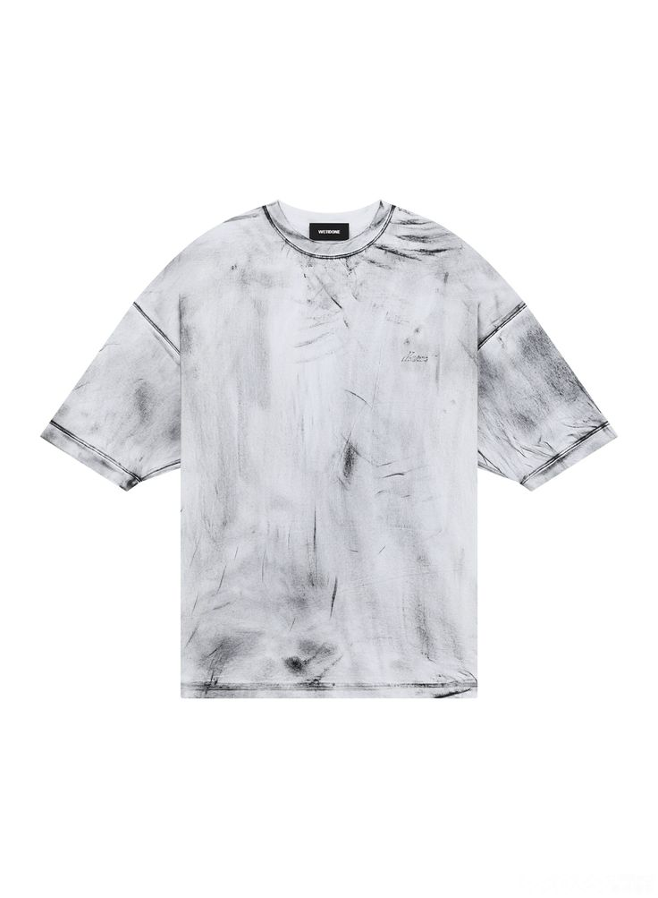

Про мене
Привіт! Мене звати Вікторія Германович, і я студентка Львівського фахового коледжу декоративного і ужиткового мистецтва ім. І. Труша. Моє захоплення – створення дизайну для одягу, зокрема футболок і худі. Моя мета – поєднувати мистецтво та практичність, створюючи одяг, який виражає індивідуальність кожного. У своїх роботах я використовую різноманітні техніки і натхнення з сучасного мистецтва, культури та природи.
Мої роботи
Худі


Футболки



Контакти
Зв'яжіться з нами через:
- Email: contact@shrimpclothes.com
- Телефон: +380111111111
- Instagram: @shrimpclothes
- Facebook: Shrimp Clothes